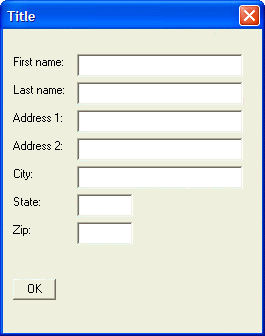

{XMARGIN}
Syntax
{XMARGIN= Left, Right }
|
Argument |
Type |
Description |
|
Left |
N |
The number of characters to use as the left margin of the Xdialog. |
|
Right |
N |
The number of characters to use as the right margin of the Xdialog. |
Description
The {XMARGIN} command sets the left and right margins of the Xdialog. Unless otherwise specified, the measurement is in terms of the default font, which is Arial 8 point.
Limitations
Desktop applications only
Example
For example, the following script adds a margin of 2 rows on the top and bottom, 2 columns on the left, and 4 columns on the right of the dialog:
|
result=ui_dlg_box("Title",<<%dlg% {ymargin=2,2} {xmargin=2,4} {ysize=2} First name:| [.32firstname]; Last name:| [.32lastname]; Address 1:| [.32address1]; Address 2:| [.32address2]; City:| [.32City]; State:| [State]; Zip:| [Zip]; {lf}; %dlg%) |

See Also